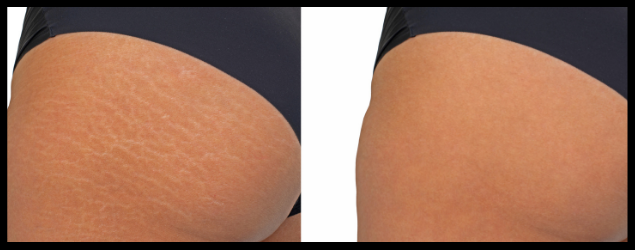
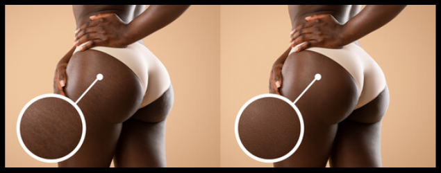
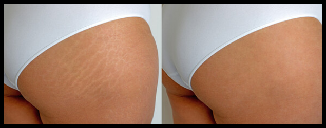
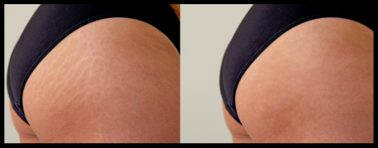
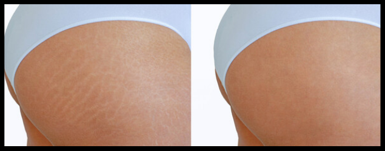

O Efeito Sanfona são oscilações dos quilos que vão e voltam e deixam as mulheres malucas com tanta mudança de manequim. Esse efeito se caracteriza com a perda e ganho de peso após o emgrecimento, ou seja, o ponteiro da balança vai lá para baixo durante período do porcesso de perda de peso, mas volta a subir quando esse processo é interrompido sem precauções.
Após esse processo de engorada e emagrece, as estrias aparecem na pele quando há fibrose localizada excessiva na forma de cordões, como resposta à quebra e má qualidade das fibras previamente existentes.
Ou seja, são cicatrizes desse tecido danificado.
Locais onde mais ocorrem as as Cicatrizes:
"Barriga, Quadris, Nádegas, Pernas, Coxas, Braços, Costas e Seios"
.....
.....
" Estrias na Gravides "
As estrias são um dos aspectos mais temidos pelas mulheres durante a gravidez.
No entanto, se você tomar alguns cuidados, poderá reduzir o risco de elas aparecerem ou tornar sua aparência muito sutil.
.....
" Cuidados com as Estrias na Gravides "
.....
Protocolo Anti Estrias
oferece uma incrível coleção de maravilhosas Pomadas caseiras e Massagens!
Para diminuir e até eliminar a flacidez e estrias localizadas...
" Antes e Depois do Protocolo Anti Estrias "





Bem, a boa notícia é que você vai ter todas esses receitas e métodos de massagens.
PROTOCOLO ANTI ESTRIAS
© 2022 – Todos os direitos reservados. Este site não faz parte nem é endossado pelo Facebook. Facebook é uma marca comercial da Facebook, Inc.